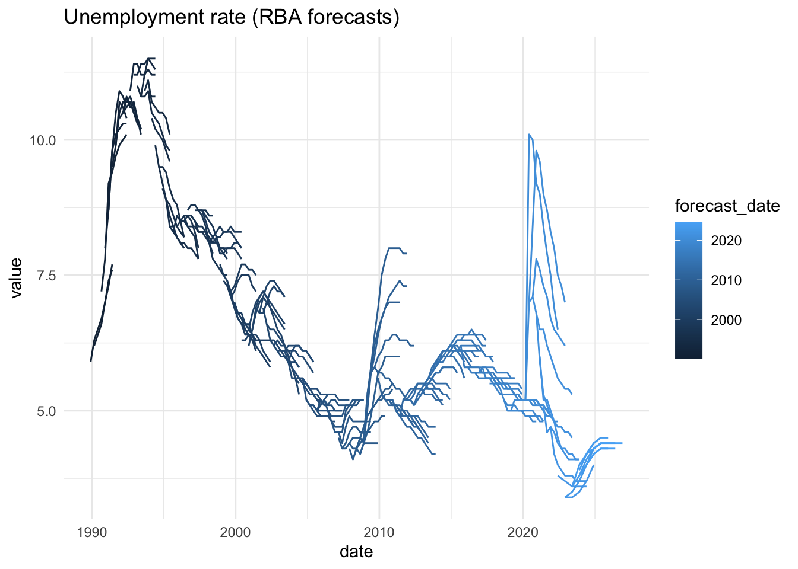

Get data from the Reserve Bank of Australia in a tidy tibble.
Installation
Install from CRAN using:
install.packages("readrba")Or install the development version from GitHub:
remotes::install_github("mattcowgill/readrba")Examples
Quick examples
With a few lines of code, you can get a data series from the RBA and visualise it. Here’s the unemployment rate:
unemp_rate <- read_rba(series_id = "GLFSURSA")
unemp_rate %>%
ggplot(aes(x = date, y = value)) +
geom_line() +
theme_minimal() +
labs(title = "Unemployment rate (actual)")
And you can also easily get the RBA’s public forecasts - from 1990 to present - and visualise those. Here’s every public forecast of the unemployment rate the RBA has made over the past three decades:
unemp_forecasts <- rba_forecasts() %>%
filter(series == "unemp_rate")
unemp_forecasts %>%
ggplot(aes(x = date,
y = value,
group = forecast_date,
col = forecast_date)) +
geom_line() +
theme_minimal() +
labs(title = "Unemployment rate (RBA forecasts)")
Reading RBA data
There primary function in {readrba} is read_rba().
Here’s how you fetch the current version of a single RBA statistical table: table G1, consumer price inflation using read_rba():
cpi_table <- read_rba(table_no = "g1")The object returned by read_rba() is a tidy tibble (ie. in ‘long’ format):
head(cpi_table)
#> # A tibble: 6 × 11
#> date series value frequ…¹ serie…² units source pub_date serie…³
#> <date> <chr> <dbl> <chr> <chr> <chr> <chr> <date> <chr>
#> 1 1922-06-01 Consumer pri… 2.8 Quarte… Origin… Inde… ABS /… 2023-01-27 GCPIAG
#> 2 1922-09-01 Consumer pri… 2.8 Quarte… Origin… Inde… ABS /… 2023-01-27 GCPIAG
#> 3 1922-12-01 Consumer pri… 2.7 Quarte… Origin… Inde… ABS /… 2023-01-27 GCPIAG
#> 4 1923-03-01 Consumer pri… 2.7 Quarte… Origin… Inde… ABS /… 2023-01-27 GCPIAG
#> 5 1923-06-01 Consumer pri… 2.8 Quarte… Origin… Inde… ABS /… 2023-01-27 GCPIAG
#> 6 1923-09-01 Consumer pri… 2.9 Quarte… Origin… Inde… ABS /… 2023-01-27 GCPIAG
#> # … with 2 more variables: description <chr>, table_title <chr>, and
#> # abbreviated variable names ¹frequency, ²series_type, ³series_idYou can also request multiple tables. They’ll be returned together as one tidy tibble:
rba_data <- read_rba(table_no = c("a1", "g1"))
head(rba_data)
#> # A tibble: 6 × 11
#> date series value frequ…¹ serie…² units source pub_date serie…³
#> <date> <chr> <dbl> <chr> <chr> <chr> <chr> <date> <chr>
#> 1 1994-06-01 Australian d… 13680 Weekly Origin… $ mi… RBA 2023-04-11 ARBAAA…
#> 2 1994-06-08 Australian d… 13055 Weekly Origin… $ mi… RBA 2023-04-11 ARBAAA…
#> 3 1994-06-15 Australian d… 13086 Weekly Origin… $ mi… RBA 2023-04-11 ARBAAA…
#> 4 1994-06-22 Australian d… 12802 Weekly Origin… $ mi… RBA 2023-04-11 ARBAAA…
#> 5 1994-06-29 Australian d… 13563 Weekly Origin… $ mi… RBA 2023-04-11 ARBAAA…
#> 6 1994-07-06 Australian d… 12179 Weekly Origin… $ mi… RBA 2023-04-11 ARBAAA…
#> # … with 2 more variables: description <chr>, table_title <chr>, and
#> # abbreviated variable names ¹frequency, ²series_type, ³series_id
unique(rba_data$table_title)
#> [1] "A1 Reserve Bank Of Australia - Liabilities And Assets - Summary"
#> [2] "G1 Consumer Price Inflation"You can also retrieve data based on the unique RBA time series identifier(s). For example, to getch the consumer price index series only:
cpi_series <- read_rba(series_id = "GCPIAG")
head(cpi_series)
#> # A tibble: 6 × 11
#> date series value frequ…¹ serie…² units source pub_date serie…³
#> <date> <chr> <dbl> <chr> <chr> <chr> <chr> <date> <chr>
#> 1 1922-06-01 Consumer pri… 2.8 Quarte… Origin… Inde… ABS /… 2023-01-27 GCPIAG
#> 2 1922-09-01 Consumer pri… 2.8 Quarte… Origin… Inde… ABS /… 2023-01-27 GCPIAG
#> 3 1922-12-01 Consumer pri… 2.7 Quarte… Origin… Inde… ABS /… 2023-01-27 GCPIAG
#> 4 1923-03-01 Consumer pri… 2.7 Quarte… Origin… Inde… ABS /… 2023-01-27 GCPIAG
#> 5 1923-06-01 Consumer pri… 2.8 Quarte… Origin… Inde… ABS /… 2023-01-27 GCPIAG
#> 6 1923-09-01 Consumer pri… 2.9 Quarte… Origin… Inde… ABS /… 2023-01-27 GCPIAG
#> # … with 2 more variables: description <chr>, table_title <chr>, and
#> # abbreviated variable names ¹frequency, ²series_type, ³series_id
unique(cpi_series$series_id)
#> [1] "GCPIAG"The convenience function read_rba_seriesid() is a wrapper around read_rba(). This means read_rba_seriesid("GCPIAG") is equivalent to read_rba(series_id = "GCPIAG").
By default, read_rba() fetches the current version of whatever table you request. You can specify the historical version of a table, if it’s available, using the cur_hist argument:
hist_a11 <- read_rba(table_no = "a1.1", cur_hist = "historical")
head(hist_a11)
#> # A tibble: 6 × 11
#> date series value frequ…¹ serie…² units source pub_date serie…³
#> <date> <chr> <dbl> <chr> <chr> <chr> <chr> <date> <chr>
#> 1 1977-07-31 Australian G… 654 Monthly Origin… $ mi… RBA 2015-06-26 ARBALD…
#> 2 1977-08-31 Australian G… 665 Monthly Origin… $ mi… RBA 2015-06-26 ARBALD…
#> 3 1977-09-30 Australian G… 695 Monthly Origin… $ mi… RBA 2015-06-26 ARBALD…
#> 4 1977-10-31 Australian G… 609 Monthly Origin… $ mi… RBA 2015-06-26 ARBALD…
#> 5 1977-11-30 Australian G… 560 Monthly Origin… $ mi… RBA 2015-06-26 ARBALD…
#> 6 1977-12-31 Australian G… 614 Monthly Origin… $ mi… RBA 2015-06-26 ARBALD…
#> # … with 2 more variables: description <chr>, table_title <chr>, and
#> # abbreviated variable names ¹frequency, ²series_type, ³series_idBrowsing RBA data
Two functions are provided to help you find the table number or series ID you need. These are browse_rba_tables() and browse_rba_series(). Each returns a tibble with information about the available RBA data.
browse_rba_tables()
#> # A tibble: 123 × 5
#> title no url curre…¹ reada…²
#> <chr> <chr> <chr> <chr> <lgl>
#> 1 Liabilities and Assets – Summary A1 http… current TRUE
#> 2 Liabilities and Assets – Detailed A1.1 http… current TRUE
#> 3 Monetary Policy Changes A2 http… current TRUE
#> 4 Monetary Policy Operations – Current A3 http… current TRUE
#> 5 Holdings of Australian Government Securities and… A3.1 http… current TRUE
#> 6 Securities Lending Repurchase and Switch Transac… A3.2 http… current TRUE
#> 7 Foreign Exchange Transactions and Holdings of Of… A4 http… current TRUE
#> 8 Daily Foreign Exchange Market Intervention Trans… A5 http… current TRUE
#> 9 Banknotes on Issue by Denomination A6 http… current TRUE
#> 10 Detected Australian Counterfeits by Denomination A7 http… current TRUE
#> # … with 113 more rows, and abbreviated variable names ¹current_or_historical,
#> # ²readable
browse_rba_series()
#> # A tibble: 4,230 × 8
#> table_no series serie…¹ serie…² table…³ cur_h…⁴ descr…⁵ frequ…⁶
#> <chr> <chr> <chr> <chr> <chr> <chr> <chr> <chr>
#> 1 A1 Australian dollar i… ARBAAA… Origin… A1 Res… current Austra… Weekly
#> 2 A1 Capital and Reserve… ARBALC… Origin… A1 Res… current Capita… Weekly
#> 3 A1 Deposits (excluding… ARBALD… Origin… A1 Res… current Deposi… Weekly
#> 4 A1 Exchange settlement… ARBALE… Origin… A1 Res… current Exchan… Weekly
#> 5 A1 Gold and foreign ex… ARBAAG… Origin… A1 Res… current Gold a… Weekly
#> 6 A1 Notes on issue ARBALN… Origin… A1 Res… current Notes … Weekly
#> 7 A1 Other assets (inclu… ARBAAO… Origin… A1 Res… current Other … Weekly
#> 8 A1 Other liabilities ARBALO… Origin… A1 Res… current Other … Weekly
#> 9 A1 Total assets ARBAAT… Origin… A1 Res… current Total … Weekly
#> 10 A1 Total liabilities ARBALT… Origin… A1 Res… current Total … Weekly
#> # … with 4,220 more rows, and abbreviated variable names ¹series_id,
#> # ²series_type, ³table_title, ⁴cur_hist, ⁵description, ⁶frequencyYou can specify a search string to filter the tables or series, as in:
browse_rba_tables("inflation")
#> # A tibble: 3 × 5
#> title no url curre…¹ reada…²
#> <chr> <chr> <chr> <chr> <lgl>
#> 1 Consumer Price Inflation G1 https://w… current TRUE
#> 2 Consumer Price Inflation – Expenditure Groups G2 https://w… current TRUE
#> 3 Inflation Expectations G3 https://w… current TRUE
#> # … with abbreviated variable names ¹current_or_historical, ²readableRBA forecasts
The function rba_forecasts() provides easy access to all the RBA’s public forecasts of key economic variables since 1990. The function scrapes the RBA website to obtain the latest Statement on Monetary Policy forecasts.
rba_forecasts()
#> # A tibble: 5,411 × 8
#> series_desc forecast…¹ notes source value date year_…² series
#> <chr> <date> <chr> <chr> <dbl> <date> <dbl> <chr>
#> 1 CPI - 4 quarter chan… 1990-03-01 <NA> JEFG 8.6 1990-03-01 1990. cpi_a…
#> 2 CPI - 4 quarter chan… 1990-03-01 <NA> JEFG 7.6 1990-06-01 1990. cpi_a…
#> 3 CPI - 4 quarter chan… 1990-03-01 <NA> JEFG 6.5 1990-09-01 1990. cpi_a…
#> 4 CPI - 4 quarter chan… 1990-03-01 <NA> JEFG 6 1990-12-01 1990. cpi_a…
#> 5 CPI - 4 quarter chan… 1990-03-01 <NA> JEFG 5.9 1991-03-01 1991. cpi_a…
#> 6 CPI - 4 quarter chan… 1990-03-01 <NA> JEFG 6.2 1991-06-01 1991. cpi_a…
#> 7 Unemployment rate - … 1990-03-01 <NA> JEFG 5.9 1989-12-01 1989. unemp…
#> 8 Unemployment rate - … 1990-03-01 <NA> JEFG 6.3 1990-03-01 1990. unemp…
#> 9 Unemployment rate - … 1990-03-01 <NA> JEFG 6.5 1990-06-01 1990. unemp…
#> 10 Unemployment rate - … 1990-03-01 <NA> JEFG 6.7 1990-09-01 1990. unemp…
#> # … with 5,401 more rows, and abbreviated variable names ¹forecast_date,
#> # ²year_qtrIf you just want the latest forecasts, you can request them:
rba_forecasts(all_or_latest = "latest")
#> # A tibble: 102 × 8
#> forecast_date date series value serie…¹ source notes year_…²
#> <date> <date> <chr> <dbl> <chr> <chr> <chr> <dbl>
#> 1 2023-02-01 2022-12-01 aena_change 4.7 Nomina… SMP (a) … 2022.
#> 2 2023-02-01 2023-06-01 aena_change 6.8 Nomina… SMP (a) … 2023.
#> 3 2023-02-01 2023-12-01 aena_change 5.4 Nomina… SMP (a) … 2023.
#> 4 2023-02-01 2024-06-01 aena_change 4.8 Nomina… SMP (a) … 2024.
#> 5 2023-02-01 2024-12-01 aena_change 4.5 Nomina… SMP (a) … 2024.
#> 6 2023-02-01 2025-06-01 aena_change 4.1 Nomina… SMP (a) … 2025.
#> 7 2023-02-01 2022-12-01 business_inv_cha… 3.6 Busine… SMP (a) … 2022.
#> 8 2023-02-01 2023-06-01 business_inv_cha… 3.1 Busine… SMP (a) … 2023.
#> 9 2023-02-01 2023-12-01 business_inv_cha… 3.7 Busine… SMP (a) … 2023.
#> 10 2023-02-01 2024-06-01 business_inv_cha… 3.6 Busine… SMP (a) … 2024.
#> # … with 92 more rows, and abbreviated variable names ¹series_desc, ²year_qtrData availability
The read_rba() function is able to import most tables on the Statistical Tables page of the RBA website. These are the tables that are downloaded when you use read_rba(cur_hist = "current"), the default.
read_rba() can also download many of the tables on the Historical Data page of the RBA website. To get these, specify cur_hist = "historical" in read_rba().
Historical exchange rate tables
The historical exchange rate tables do not have table numbers on the RBA website. They can still be downloaded, using the following table numbers:
| Table title | table_no |
|---|---|
| Exchange Rates – Daily – 1983 to 1986 | ex_daily_8386 |
| Exchange Rates – Daily – 1987 to 1990 | ex_daily_8790 |
| Exchange Rates – Daily – 1991 to 1994 | ex_daily_9194 |
| Exchange Rates – Daily – 1995 to 1998 | ex_daily_9598 |
| Exchange Rates – Daily – 1999 to 2002 | ex_daily_9902 |
| Exchange Rates – Daily – 2003 to 2006 | ex_daily_0306 |
| Exchange Rates – Daily – 2007 to 2009 | ex_daily_0709 |
| Exchange Rates – Daily – 2010 to 2013 | ex_daily_1013 |
| Exchange Rates – Daily – 2014 to 2017 | ex_daily_1417 |
| Exchange Rates – Daily – 2018 to 2022 | ex_daily_1822 |
| Exchange Rates – Daily – 2023 to Current | ex_daily_23cur |
| Exchange Rates – Monthly – January 2010 to latest complete month of current year | ex_monthly_10cur |
| Exchange Rates – Monthly – July 1969 to December 2009 | ex_monthly_6909 |
Non-standard tables
read_rba() is currently only able to import RBA statistical tables that are formatted in a (more or less) standard way. Some are formatted in a non-standard way, either because they’re distributions rather than time series, or because they’re particularly old.
Tables that are not able to be downloaded are:
| Table title | table_no | current_or_historical |
|---|---|---|
| Household Balance Sheets – Distribution | E3 | current |
| Household Gearing – Distribution | E4 | current |
| Household Financial Assets – Distribution | E5 | current |
| Household Non-Financial Assets – Distribution | E6 | current |
| Household Debt – Distribution | E7 | current |
| Open Market Operations – 2012 to 2013 | A3 | historical |
| Open Market Operations – 2009 to 2011 | A3 | historical |
| Open Market Operations – 2003 to 2008 | A3 | historical |
| Individual Banks’ Assets – 1991–1992 to 1997–1998 | J1 | historical |
| Individual Banks’ Liabilities – 1991–1992 to 1997–1998 | J2 | historical |
| Treasury Note Tenders - 1989–2006 | E4 | historical |
| Treasury Bond Tenders – 1982–2006 | E5 | historical |
| Treasury Bond Tenders – Amount Allotted, by Years to Maturity – 1982–2006 | E5 | historical |
| Treasury Bond Switch Tenders – 2008 | E6 | historical |
| Treasury Capital Indexed Bonds – 1985–2006 | E7 | historical |
| Indicative Mid Rates of Australian Government Securities – 1992 to 2008 | F16 | historical |
| Indicative Mid Rates of Australian Government Securities – 2009 to 2013 | F16 | historical |
| Zero-coupon Interest Rates – Analytical Series – 1992 to 2008 | F17 | historical |
Issues and contributions
I welcome any feature requests or bug reports. The best way is to file a GitHub issue.
I would welcome contributions to the package. Please start by filing an issue, outlining the bug you intend to fix or functionality you intend to add or modify.